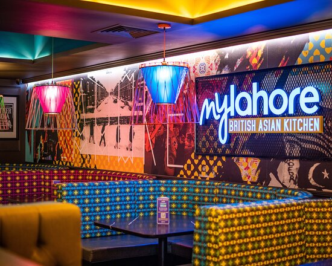
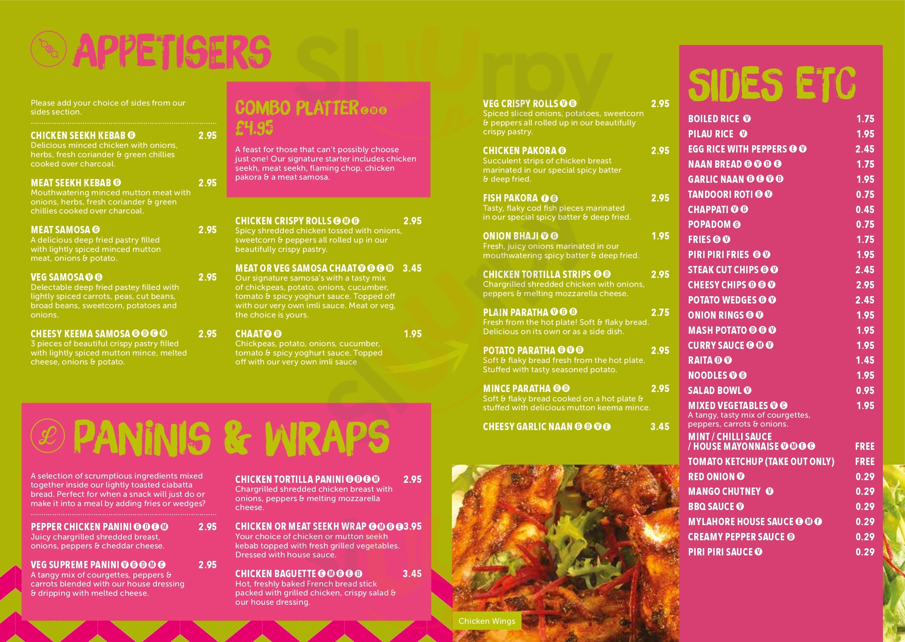
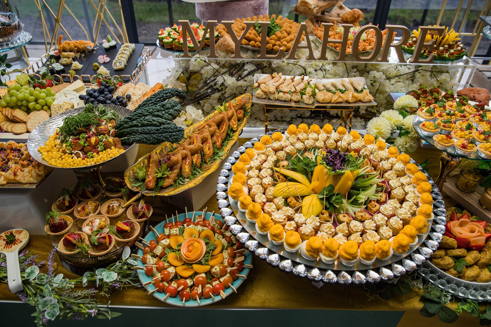

The UK city of Manchester has a long history of accepting different cultures and customs Of them, the Pakistani population has been important in creating the multicultural character of the city. Manchester has been strongly impacted by Lahore, the capital of Punjab, which is in Pakistan, resulting in a distinctive fusion of customs and cultures that lives peacefully.
My Lahore is a popular for having wonderful food and a friendly ambiance and is well-known for serving authentic Pakistani cuisine. The eatery has a broad menu with classic foods like kebabs, curries, biryani, and several kinds of bread. My Lahore is also praised for its vivid and colourful interior design, which gives diners an inviting feeling.
For locals and tourists, Menu makes it so much easier to enjoy traditional Pakistani food. Because of its availability, it's a very well option for many people looking to explore Pakistani food in the heart of England. Most of the dishes on the menu are Pakistani dishes. Chicken karahi is one of the most popular dishes served at the restaurant. Other popular dishes include Sealed kebabs Nihari Haleem Vegetarian dishes are also available at the restaurant. Some of the dishes are Dal Makhani Palak paneer These are some of the dishes you can expect to find at the restaurant. Menu Lahore also serves dishes that are unique to each occasion or season.
Desserts are a popular treat that people all over the world would love. For those who have a dessert, Manchester offers a wide selection of dessert options. About Desserts is a dessert destination that originated in Lahore and has since grown to include Manchester. This essay will look at About Desserts' history, products, and reasons for becoming a well liked option for Manchester's dessert fans.
